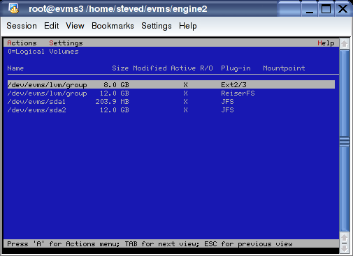

If you are using the Ncurses interface, you can view your migrated volumes by typing evmsn at the command prompt. The following window opens, listing your migrated volumes.
Figure 4-2. Ncurses start-up window
